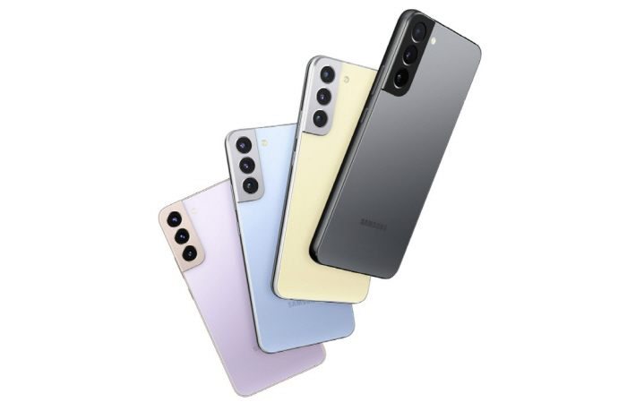

안녕하세요. Samsung Galaxy S22 페이지 입니다.
2010년 갤럭시 S를 시작으로, 매해 상반기에 공개된 삼성전자의 안드로이드 플래그십 스마트폰 시리즈인 갤럭시 S 시리즈의 2022년형 모델이자 13번째 모델 중 기본 모델이다.
정식 발매명은 공개 연도인 2022년에 맞춰 갤럭시 S22로 명명되었다.
시리즈 코드명은 Rainbow로 명명되었으며, 기기 코드명은 r0q/r0s로 명명되었다.
한국 시각으로 2022년 2월 10일 오전 0시에 갤럭시 언팩 2022에서 공개되었다.